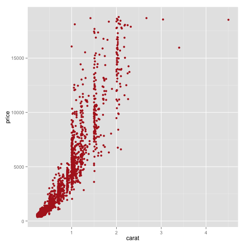

- Background
- Text, Text, Text
- Linguistics and Data Science
- 實作
Introduction to Data Science and Text Analytics
lecture 01
謝舒凱 Graduate Institute of Linguistics, NTU
大綱
Background- Text, Text, Text
- Linguistics and Data Science
- 實作
背景
- 文本分析 (text analysis) 在語言學裡 1950 年代即開始。文本自動分析 (text analytics) 則是受到大數據的影響開始興起。
Text Analysis and Text Analytics
目前的關注主題
- text categorization
- text clustering / similarity / association
- Named Entity Extraction / topic modelling / event detection
- Sentiment analysis / Opinion mining
- document summarization
- text and social network
應用面
- Historical text mining
- Legal text mining
- Product/comments
也可以改造政府
DataTaipei: R client for Data.Taipei
功能：
－搜尋台北市政府的開放資料 －下載台北市政府的開放資料 －下載的資料集會透過 http://data.taipei 提供的功能轉換為表格
大綱
- Background
Text, Text, Text- Linguistics and Data Science
- 實作
文本長什麼樣子
來源：Local, Web, Sensors
大綱
- Background
- Text, Text, Text
Linguistics and Data Science- 實作
One-minute Linguistics
- 語言學要回答
語言的習得與發展，結構與功能，神經與心理機制，社會變異與演化過程等。 - 經驗/計算語言學 (empirical/computational linguistics) [a.k.a. Natural Language Processing] 用電腦來幫助我們回答上述問題，並產生應用。
- (大數據中的) 語言數據（語料）蘊含了文化歷史記憶，社會心理趨勢，政治輿情傾向，情緒偏好分佈，人格特質與決策行為，疾病前期徵兆等等。
語言分析與處理是資料科學的第二把刀 Linguistic analysis and Data Science
Linguistic data are ubiqutous, knowledge to be discovered, tendency to be predicted.- 自然語言處理 (Natural Language Processing) and 文本分析技術 (Textual Analytics) are the keys [Why? pressing
p]
Linguistic Foundations of Text Analytics
Data source: [Adapted from (Pinker, 1999)]
一句話激怒語言學家
"Every time I fire a linguist, the performance of the speech recognizer goes up", (Frederick Jelinek 1932-2010, IBM and Johns Hopkins.)
Deep machine learning requires only shallow linguistic processing ?
為什麼 BOW 沒用，功能語言學會告訴妳
- BOW (bag-of-word) appraoch
來源：Local, Web, Sensors
大綱
- Background
- Text, Text, Text
- Linguistics and Data Science
實作
3 個 Why：Linux (command line tools) + R/Programming + Git
- 事實上有許多商業軟體工具與線上服務
- 但是
- Coding is the new literacy
- 求人不如求己(＝我沒有錢但是我有青春)
- open-sourced objects 才跟得上(改變)世界的腳步
指令列工具與 Linux
- Embedded system is everywhere (Check RPi)
- 可以簡單解決的，就不要用複雜的方式。
Jane Andrews, The Stories Mother Nature Told Her Children
wget http://archive.org/download/thestoriesmother05792gut/stmtn10.txt
file stmtn10.txt
head -n 20 stmtn10.txt
less -N stmtn10.txt
sed '2206,2525d' stmtn10.txt > stmtn10-nofooter.txt
sed '1,40d' stmtn10-nofooter.txt > stmtn10-trimmed.txt
wc -l stmtn10-trimmed.txt
活用組合之後會加速工作
w3m -dump http://www.gnu.org/gnu/manifesto.html | wc
課堂練習 [1]
抓一篇 Alice in wonderland 來試試。
R? Python? or Both?
初學者從實用面來決定
- 免費線上課程 (e.g., DataCamp; Coursera DS series, etc)
- 相關套件與社群支持。發揮妳的自學精神！

資料科學實作
想像一個場景：妳的公司開發了一種智慧型香水。作為一個 Data Scientist，妳要面對的資料類型：
- 工廠感測器 (sensors) ／銷售／實驗室產生的數值資料 (numeric data)
社會感測器 (twitter, ptt, weibo) 傳回即時的產品評論文本資料 (textual data)
numeric data
textual data
文本的熱門關注：評論
美食、產品、電影、書籍、課程、施政）
記住這個流程: Pre-processing Exploratory data analysis (statistic summary/graphical representation) (Linguistic annotation and analysis) Predictive modeling Report (
Data <> Story)
香水評論
wget http://www.sensorywithr.org/wp-content/uploads/2014/06/perfumes_comments.csv
iconv -f ISO-8859-15 -t UTF-8 perfumes_comments.csv > perfumes_comments_utf8.csv
csvlook perfumes_comments_utf8.csv | head
R way
comments <- read.csv("../../../data/week2/perfumes_comments.csv", sep = "\t",
dec = ".", quote = "\"")
head(comments)
summary(comments)
Source: sensorywithr
library(FactoMineR)
res.textual <- textual(comments, num.text = 3, contingence.by = 1, sep.word = ";")
names(res.textual)
res.textual$cont.table[,1:10]

複習
What is 1 + 1?
- 1
- 2
- 3
- 4
This is easy!
Really, you don't know how?
作業 (20150924)
- 讀這章，寫下你的問題。
- from TA
- (bonus) 妳覺得最好的分組方法（數學，遐想法皆可）